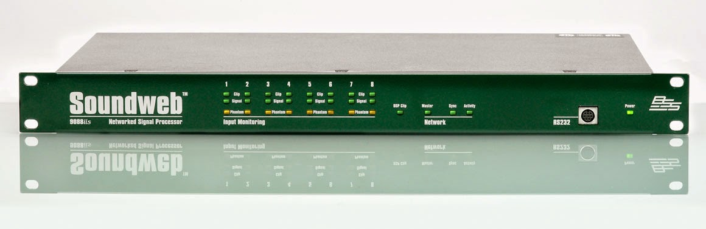
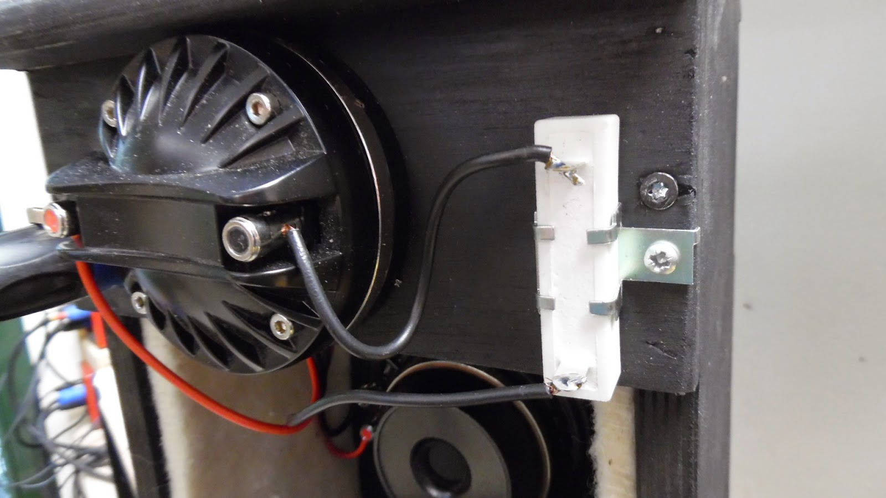
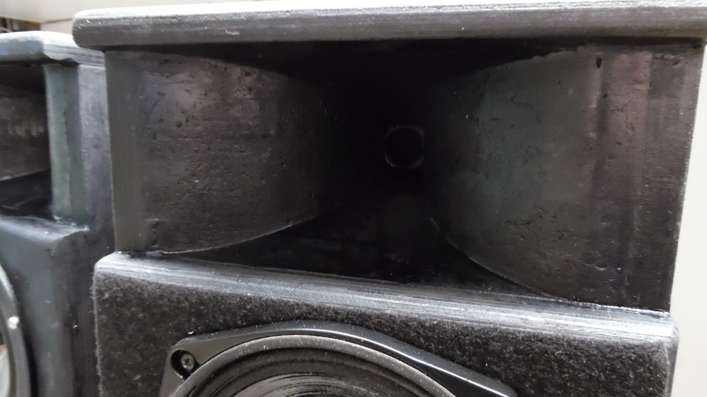
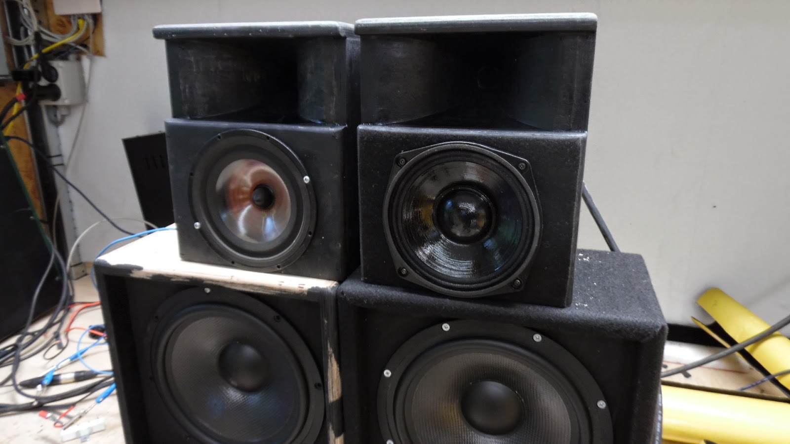
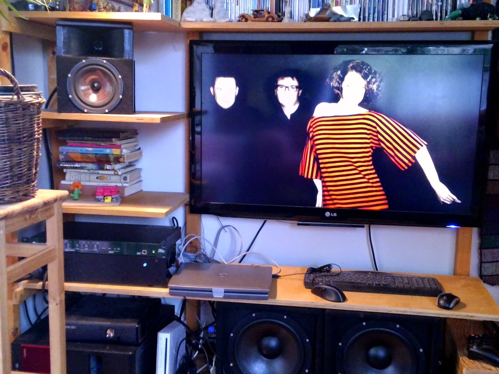

On the bench is a bookshelf system built from leftovers: a Soundweb 9088ii, a pair of tractrix horns, a Seas mid and a pair of unknown subs. The design rule was simple: buy nothing new.
In the Netherlands we have this expression about plumbers always having leaky taps in their own homes. Sooo... while business was on the slow side, I decided to upgrade my personal hi-fi/media-centre sound system to something with a bit more throw and detail. Having so much stuff from prior experiments lying around, I made it a design restriction not to buy anything new. That worked out to be a much longer-lasting effort than I calculated. Three weeks in a row of precious time wasted? Oh well, let's call it educating myself. Let me try to give you a condensed report.
The design imperative was to build a small system (it had to fit in the bookshelf) with enough throw and definition to listen to music at very low levels at night while the family was asleep. For that we would need FIR filters, so a Soundweb 9088ii would be at the heart of it all; see my prior posts on the upgrade and repair of these nice tools.
Next would be the speaker cabinets themselves. The top end wasn't going to be time-consuming, as I was recycling my previously built tractrix waveguides (also see previous posts), loaded with some DH450 drivers from my preferred and highly appreciated supplier A&D Audio.






Now, why is that resistor in series? Three reasons.
First, evidently this horn/driver combination will have a lot more gain than the accompanying hi-fi mid speaker. A big attenuation in the digital domain would be needed to overcome a magnitude mismatch. Rather than choking on the associated loss of digital headroom/resolution, I decided to make a passive attenuator.
Second, the amplifier will have to make some amplitude swing, so distortion introduced by the amp (class AB crossover distortion) will be relatively small. For some reason, presumably distortion-related, I also like the sound of warmer electronics (warm, not hot). Okay, okay, writing this I detect a mumbo-jumbo alert, but believe me: there really is a difference. While I don't have the engineering skills to explain it, that doesn't mean I am lacking in firm, science-based perceptual skills.
Third, and not least: the driver/amplifier combination will now operate in a partly current-drive mode (again, also written about in a prior post). Naturally we now have to use some minimum-phase EQ to compensate for the magnitude differences introduced by the impedance curve of the driver in series with this resistor, but the overall reduction of distortion is quite convincing.
Now for the mid speaker:


From the maximum total cabinet height of 28 cm (it had to fit in the bookshelf, remember) I now only had 17 cm left. In pro-audio more and more small speakers are being used in those line arrays you see at every bigger event. So, being a pro-audio designer, one would say I have plenty of sample speakers lying around to use as this mid speaker. Quite disappointing! From all the samples I tested (yup, a lot of big names), the only one remotely optional for this purpose is the one shown in the picture. This experiment alone actually took a whole working week, so fast-forward here. ;)
Does this imply that all PA speakers are horrific? Yes and no. For this purpose they will not be suited, in the same way that a hi-fi speaker will not rock you. Although this statement seems quite obvious, one really has to add a lot of question marks here. Why? Actually this is a pledge for a paradigm shift in our industry: we neither have the tools nor the scientific language to quantify the above statement. Surely this has something to do with distortion, but how, what, why?
Anyway, for the purpose of the story let's continue with this Seas mid speaker. In the pictures above you can still see an open back. Being a bit too lazy to do a proper cabinet tuning (either closed or reflex), I thought this dipole configuration would be a good idea. Stupid! Horn-loaded, zero-phase-shift, directed highs don't combine with room-loaded lows. So in the final cabinet this is a closed box (with, luckily, the correct volume for a .7 tuning).
Same thing for the subs, which I made from some no-brand speakers I had lying around. Nothing special here, only highly over-dimensioned for the purpose, in that they will always be operated in their linear region only.
Soon, a follow-up on electronics and FIR filtering. For now, here's a preview of the final result:

